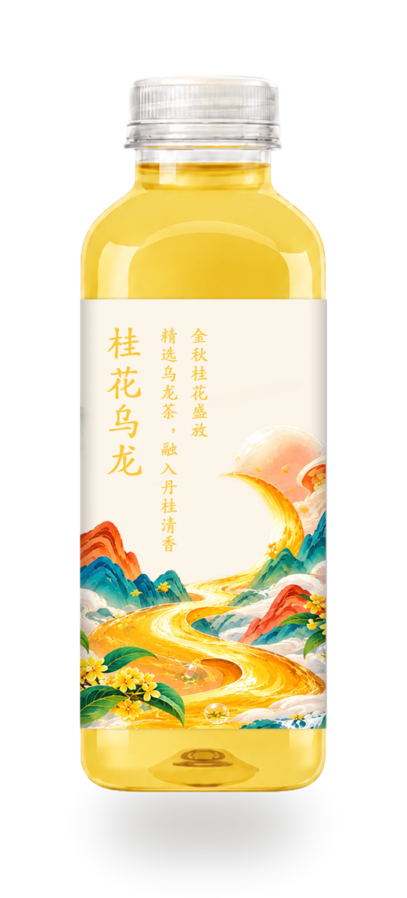

NO. 01 / ALL THINGS GROW
茉莉的香气先到，茶味随后。入口清亮，尾段留下一点干净的回甘。
风味档案 / FLAVOR PROFILE
同一座山，三种香气。远看是一组，近看才分口味。
花香清扬，入口清爽。

焙火打底，桂花不压茶。
醇厚回甘，涩感可控。
02 / ORIGIN · HANGZHOU
万物生长从杭州的山、水、茶里找到了自己的轮廓。我们不把“0 糖”写成一句空口号，而是把茶的香气、焙火与回甘说清楚。
甜感来得快，茶香生长得慢。万物生长把力量放在中段香气与尾段回甘：第一口不喧闹，喝到最后才完整。
40 份课堂问卷不是市场结论，但它告诉我们：人们愿意尝试无糖茶，也需要更具体地知道它为什么好喝。
比较愿意 + 非常愿意
最大的尝试门槛
让一瓶茶顺手发生
05 / TAKE A SIP
 01 — 03
01 — 03